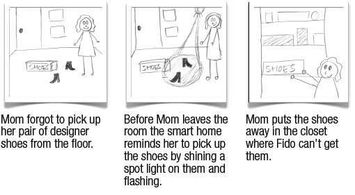

Summary
Summary| Research |
Synthesis |
Design |
Solution |
EyeDog

|
Storyboards 02
|
Design |
Concepts |
Brainstorming
We held a group brainstorming where we generated over 30 concepts. We narrowed down our concept to 11 and drew storyboard for need/concept validation.
Storyboards
1. Did you ever want to stop your dog from misbehaving when you aren't around?
2. Have you ever wished you coulc know ahead of time when your dog was getting sick?
3. Do you ever see the same people or pets when you walk your dog? Would you like to know when your pet buddies are on a walk?
4. Have you ever lost track of time and forgotten to play with your dog? Have you ever been away and wondered if your family members played with your dog while you were out?
5. Did you ever wonder how your dog sees the world?
6. Did you ever wonder what your dog is doing when you're away? Did you ever want to share everyday moments with friends and family?
7. Did you ever forget to check the gate before you let your dog out?
8. Did you ever forget to pick up your shoes or expensive items from the floor, only to come home and find that your dog chewed them up?

9. Did you ever have to be out of the house longer than you expected?
10. Did you ever reminisce about the good times you had with your dog when he was a puppy? Did you ever want to remember everyday funny moments that happened?
11. Have you ever been out of the house and wondered if anyone had fed the dog? Has your dog ever pretended he was hungry when he had actually just been fed?
Need and Concept Validation
We held need and concept validation sessions with 8 people.
The most popular concepts were: Doggy-Vision (5) Updating Pictures (10), and Fed | Not Fed (11)
We had strong validation for the need of wanting to know what your dog is going when you're away during the day, this was validated with the strong positive reaction to doggy-vision and fed | not fed. People also liked being able to share stories about their dogs with their friends. We combined all of these ideas into our final concept.
Some other things that we learned were that notifications cannot be too invasive (such as flashing lights), auditory feedback was not well received. Also, a camera on the dog's collar does not seem to push the same boudaries as a camera in the house. People had very different reactions to concepts 5 and 6. Finally, it is very important that our final concept build on existing routines that people already have with their dog.